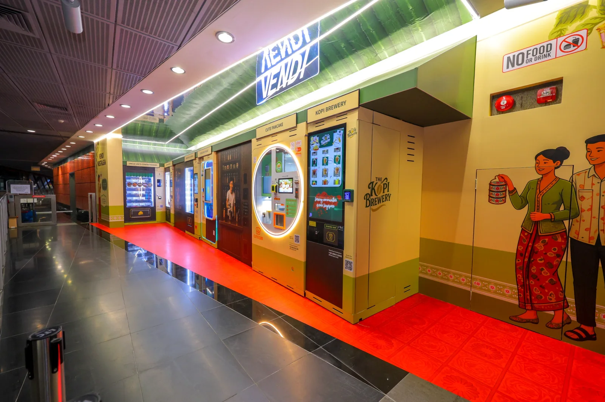
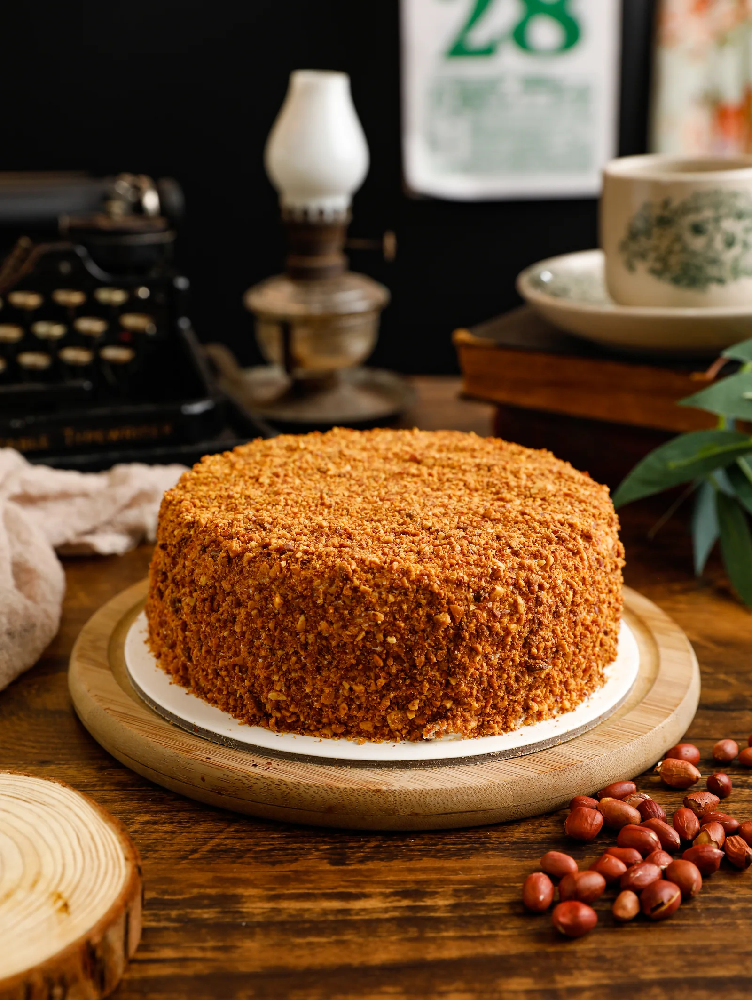
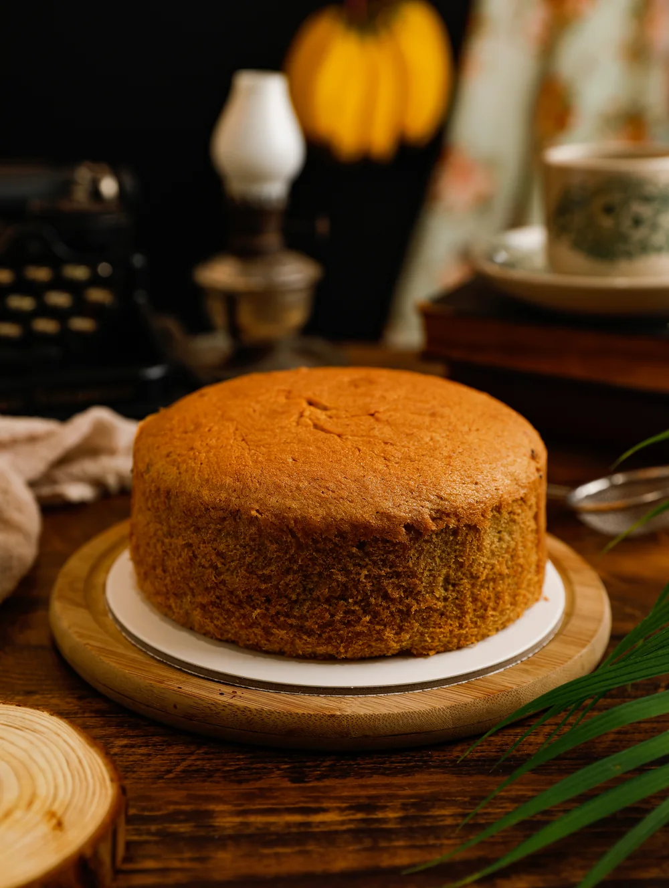

Meet people
where life happens.
A quick stop on the way home. A break in the workday. Vending can bring a favourite into the everyday spaces between destinations.
SINGAPORE · BRANDS IN MOTION
Good brands deserve to go places. We bring familiar favourites into everyday spaces through thoughtful vending operations.


A FAMILIAR FAVOURITEUncle Lee ConfectioneryHeritage, in everyday reach.01 / A FAMILIAR FAVOURITE
Some brands are part of the way a city feels. Uncle Lee started baking in 1986. Our work is about helping that familiar taste meet people in the places they already go.

HERITAGE, IN EVERYDAY REACH
A great product is the starting point. Bringing it into a vending machine introduces a different kind of work: choosing the right setting, planning stock, keeping presentation consistent and responding when things need attention.
Vector manages Uncle Lee Confectionery machines with an operator’s mindset. It is hands-on work, shaped by what happens on the ground and improved one detail at a time.
See the thinking behind itFIELD NOTES / PAYA LEBAR MRT
Uncle Lee Confectionery at VENDI, Paya Lebar MRT. A familiar favourite in the rhythm of the daily commute.
The public launch story02 / BUILT THROUGH EXPERIENCE
When a familiar favourite is right where you need it, the experience feels simple. Making it feel that way takes care.
Singapore dollars 55,000
Uncle Lee Confectionery vending · Woodleigh Hawker launch
A historical launch-period milestone, confirmed by the team. Our perspective comes from operating machines, learning from real demand and doing the daily work.
03 / WHY VENDING?
A quick stop on the way home. A break in the workday. Vending can bring a favourite into the everyday spaces between destinations.
A compact format creates room to explore new settings, without needing to recreate a full shop in every location.
Product mix, replenishment and presentation all matter. The operating loop turns day-to-day observations into practical improvements.
04 / THE DIRECTION
OUR GOAL
Build thoughtfully, one brand and one location at a time, with a focus on the experience people come back for.
OUR MISSION
Connect familiar products with convenient places through considered vending operations.
OUR VISION
A future where discovering a favourite is part of the everyday journey.
LET’S KEEP GOOD THINGS MOVING.
vectorvendingsg@gmail.com
Or connect with Adrian on LinkedIn ↗